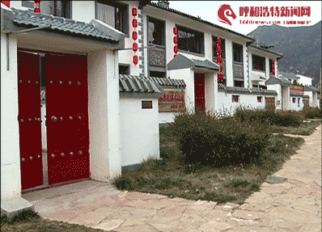
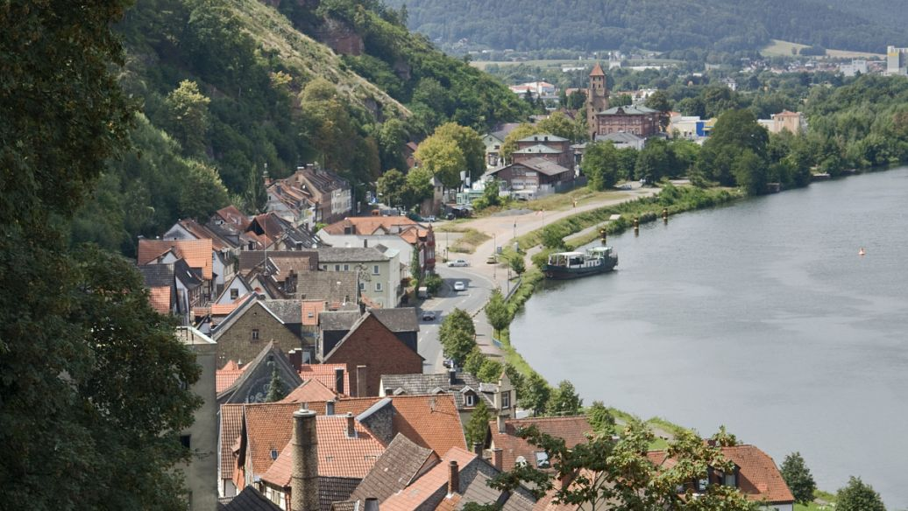
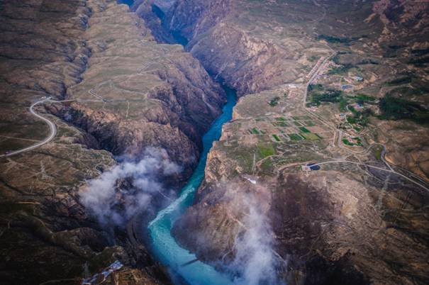
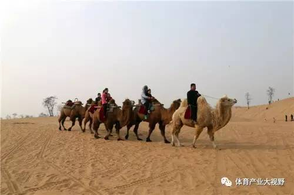
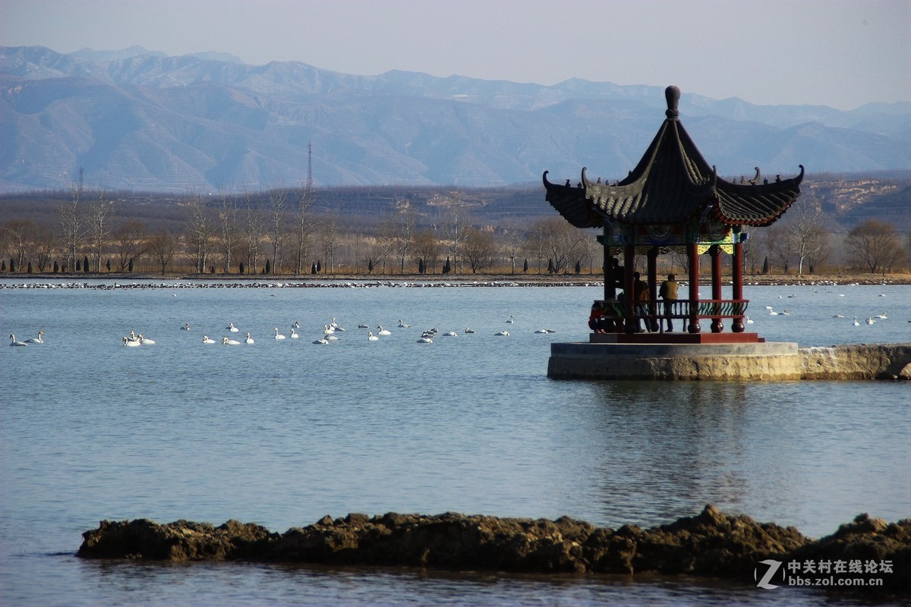

<!DOCTYPE html>
<html>
	<head>
		<meta charset="utf-8">
		<meta http-equiv="X-UA-Compatible" content="IE=edge">
		<meta name="viewport" content="initial-scale=1.0, user-scalable=no, width=device-width">
		<title>黄河体旅图网站</title>
		<link rel="stylesheet" href="https://cache.amap.com/lbs/static/main1119.css"/>
		<script type="text/javascript" src="https://webapi.amap.com/maps?v=1.4.15&key=您申请的key值"></script>
		<script type="text/javascript" src="https://cache.amap.com/lbs/static/addToolbar.js"></script>
	</head>
	<body>
		<style type="text/css">
			   .amap-logo {
			            right: 0 !important;
			            left: auto !important;
			            display: none;
						opacity:0;
			        }
			        
			        .amap-copyright {
			            right: 70px !important;
			            left: auto !important;
						opacity:0;
			        } 
		</style>
		<div id="container"></div>
		<script type="text/javascript">
		    //初始化地图对象，加载地图
		var map = new AMap.Map("container", {resizeEnable: true,zoom: 6});
		    var lnglats = [
		        [106.238496,38.492462],
		        [111.685964,40.826225],
				[103.841032,36.049115],
				[107.149943,34.375192],
				[100.62003,36.2841],
				[109.503299,34.501271],
				[111.000627,35.025643]
		    ];
			var contents = [
				"<h2>苏峪口滑雪场小镇</h2>&emsp;&emsp;滑雪场设有老少皆宜的雪圈道(平坡直滑道、U型雪浪道、S型旋转道)，配置专用的传送带，还有隔离设置的亲子戏雪区，安全放心，与其他区域互不影响.<a href=''></a>",
				"<h2>新城区保合少镇水磨运动休闲小镇</h2>&emsp;&emsp;主要有水磨村北的战国时期赵长城和 “当路塞”关口遗址,什字村南的“虎头夕照”。此外还有近年建成的太伟高尔夫球场、苁蓉山庄、小井沟生态园等驻村企业景点以及政府投资建成的大青山国家登山健身步道。<a href=''></a>",
				"<h2>皋兰县什川镇运动休闲特色小镇</h2>&emsp;主要包括冰雪运动、极限运动、水上运动等大型户外运行项目和玫瑰小镇、四季花海等体验式观光项目和医养基地、康养度假休闲区等健康休闲项目。<a href=''></a>",
				"<h2>金台区运动休闲特色小镇</h2>&emsp;金台功夫小镇聚焦东西方功夫文化创意传播，突出优势武术赛事，整合太极文化及体育、娱乐、传媒、养生及旅游之产业元素，形成武术产业聚群和产业生态链。小镇规划建设包含中国及世界功夫流派展示区、武术搏击及相关体育竞技区、中国武术文化博物展览、中国及世界武术教学体验区、户外休闲体验基地、大众体育公园、水上运动基地、国际安养基地、等功能区域。<a href=''></a>",
				"<h2>共和县龙羊峡运动休闲特色小镇</h2>&emsp;龙羊峡镇位于青海海南藏族自治州共和县东南部，坐落于青海湖的姊妹湖龙羊湖畔。小镇平均海拔2700米，有丰富的乡野园林资源、地热温泉资源、野生鱼类资源、丹霞土林资源等。<a href=''></a>",
				"<h2>大荔县沙苑运动休闲特色小镇</h2>&emsp;主要有沙漠迷宫、沙漠越野摩托、沙漠迷宫、骑骆驼、骑马、沙漠冲浪、沙漠CS、滑沙、沙漠露营、沙漠篝火晚会、沙漠滑索、滑草等项目。<a href=''></a>",
				"<h2>苪城县陌南圣天湖运动休闲特色小镇</h2>&emsp;该景区集江南水色与黄土高原风光为一体，景观异质全国独有，夏日湖中荷花争艳，荡舟湖中，不是洪湖，胜似洪湖；冬季上万只白天鹅迁移到此，尽展雍容气质，把湖面装扮得生趣盎然。“夏赏荷花，冬观天鹅”已成为圣天湖的独特风景。<a href=''></a>"
			];
		    var infoWindow = new AMap.InfoWindow({offset: new AMap.Pixel(0, -30)});
		    for (var i = 0, marker; i < lnglats.length; i++) {
		        var marker = new AMap.Marker({
		            position: lnglats[i],
		            map: map
		        });
		        marker.content = contents[i];
		        marker.on('click', markerClick);
		        marker.emit('click', {target: marker});
		    }
		    function markerClick(e) {
		        infoWindow.setContent(e.target.content);
		        infoWindow.open(map, e.target.getPosition());
		    }
			</script>
	</body>
</html>
